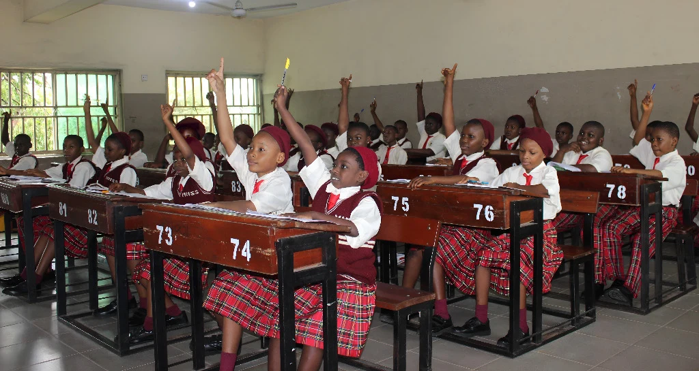
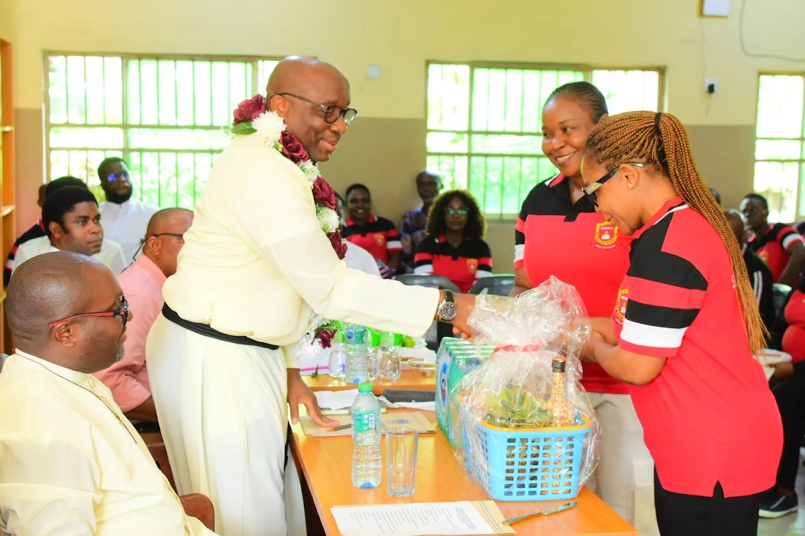
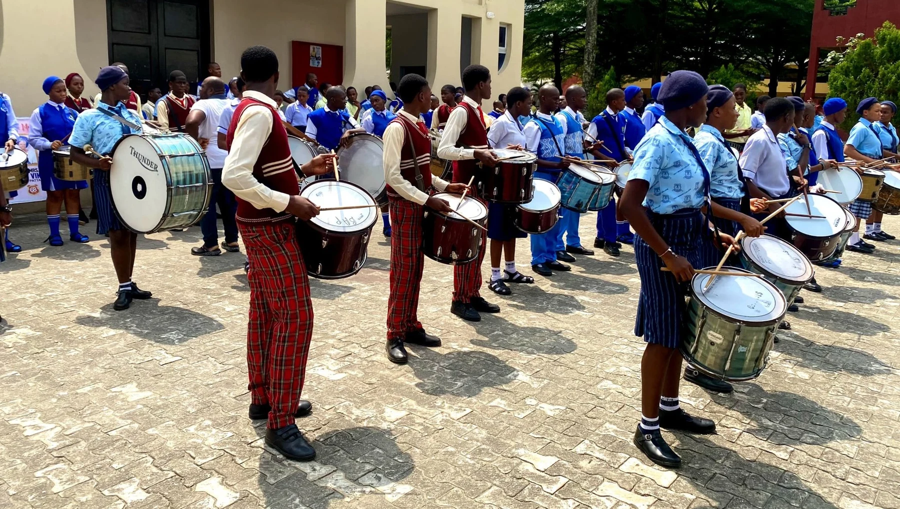
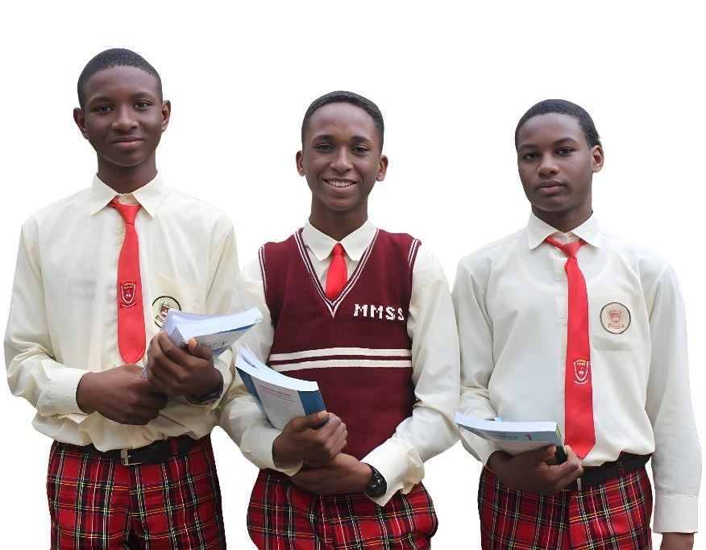
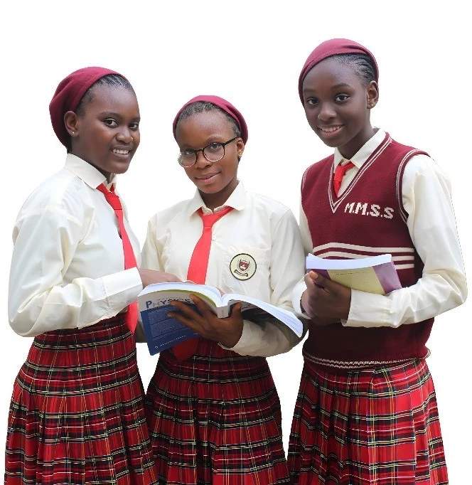

Faith that guides
A sound Christian foundation that encourages prayer, compassion, integrity, and service to others.
More than a school. A community where faith inspires learning, character shapes ambition, and every child is encouraged to flourish.
Your next chapter starts here. Explore admission to MAMSS.
WELCOME TO MATER MISERICORDIAE
At MAMSS, we believe that true education develops the whole person. Guided by Catholic teachings, we nurture curious minds, compassionate hearts, and the confidence to make a difference.
A sound Christian foundation that encourages prayer, compassion, integrity, and service to others.
Purposeful teaching and practical experiences that build knowledge, curiosity, and independent thinking.
Discipline, respect, and responsibility — values that prepare our students for life beyond the classroom.
THE PRINCIPLES THAT BRING US TOGETHER
Through the grace of God, to form and graduate excellent and morally upright students, guided by Catholic teachings and discipline. Our greatest joy lies in nurturing students who will excel and become champions in all they do.
Mater Misericordiae Secondary School is committed to the Roman Catholic Church’s vision of providing every child with a sound Christian spiritual foundation and excellence in all-round education; empowering students with knowledge to face life’s challenges in Jesus Christ; and guiding them to attain greatness and shape their destinies for a brighter future.
“Zero Tolerance to Mediocrity & Immorality” — The school’s stated commitment
GROWING TOGETHER
“Reading is not just a skill but a powerful key that unlocks creativity, sharpens intellect, and builds confidence.”
Our journey to excellence is a shared one. Together with our parents, guardians, and staff, we are creating a culture of knowledge, curiosity, and continuous growth.
ROOM TO DISCOVER. SPACE TO GROW.
From the first question to the next discovery, we give students the support and opportunities to explore what they can become.

01 / ACADEMICSJunior and senior secondary education with a focus on understanding, reading, and preparation for WAEC and NECO examinations.

02 / DISCOVERYScience and visual arts laboratories, ICT learning, and a school library support discovery beyond the pages of a textbook.

03 / EXPRESSIONMusic, sports, and shared school activities help students build friendships, discover their talents, and grow in confidence.
Experience school life ↗YOUR NEXT STEP IN LEARNING
Explore MAMSS Prep for senior-secondary study resources, practice questions, and the CBT hall.
THE TOOLS TO GO FURTHER
Explore the learning spaces, technology, and student environment described on the original school website.
WHY CHOOSE MAMSS?
The school describes its approach through five priorities — academic achievement, digital learning, safety, moral character, and practical science.
A commitment to strong preparation and achievement in WAEC and NECO examinations.
The school highlights practical ICT and coding training, supported by internet connectivity.
The original website describes 24-hour CCTV monitoring across campus. Ask about current safeguarding and security arrangements when visiting.
Nurturing “Decency in Education and Morals” through a Catholic-centred school community.
Physics, Chemistry, and Biology facilities support the connection between theory and practice.
MAMSS AT A GLANCE
Figures as published on the original school website; not independently verified. Confirm current figures with the school.
EFFORT. DEDICATION. ACHIEVEMENT.
Behind every result is a student’s commitment and a community’s support. We’re proud of our 2026 JAMB achievers.
PEOPLE WITH A SHARED PURPOSE
The administrative board presented on the school website — guiding our community in learning, character, and service.

MAMSS MALE STUDENTS
Developing excellence in character and learning.

MAMSS FEMALE STUDENTS
Empowering the girl child for a brighter future.
LIFE AT MAMSS
Real faces. Shared experiences. Take a closer look at the people and moments that make our school special.
VOICES FROM OUR COMMUNITY
Testimonials reproduced from the original school website. Views belong to the quoted contributors and have not been independently verified.
FROM OUR COMMUNITY
LESS SEARCHING. MORE DOING.
A personal space for your favourite links, admission steps, and reminders. No account required. Your school records stay on the official portals.
Personal planning tools, not the school’s official records. Reminders do not send notifications or book appointments.
YOUR SCHOOL, CONNECTED
Check results, access learning platforms, and stay connected. Secure services open on the school’s existing websites — we never collect your portal passwords here.
Your existing school accounts stay the same. External portals are operated by the school and its providers. Their availability and sign-in requirements are managed separately from this redesign.
A LITTLE GUIDANCE
Choosing a school is a big decision.
We’re here to help you take the next step.
Collect an application form from the school administrative office or the Parish Bookshop at Mater Misericordiae Catholic Church, Rumuomasi, Port Harcourt. Please call the school to confirm current availability and next steps.
The school’s 2026/2027 admission flyer lists JSS 1, JSS 2, SS 1, and SS 2. Contact the administrative office to confirm places in your preferred class.
The examination dates listed on the current flyer have passed. Please contact the school on 0703 789 8216 for any additional dates and current admission arrangements. The listed examination subjects are English Language, Mathematics, and General Paper.
Find us at No. 2 Arochukwu Street, Rumuomasi, Port Harcourt, Rivers State, Nigeria. Please contact the school before visiting to arrange a convenient time.
MAMSS brings together Catholic spiritual formation, academic learning, and character development. Our core values include compassion, integrity, discipline, excellence, fidelity, diligence, respect, prayer, creativity, and industry.
THE NEXT CHAPTER STARTS WITH A CONVERSATION
Come and discover a community that will help your child learn, belong, and become.
No. 2 Arochukwu Street, Rumuomasi,
Port Harcourt, Rivers State, Nigeria.